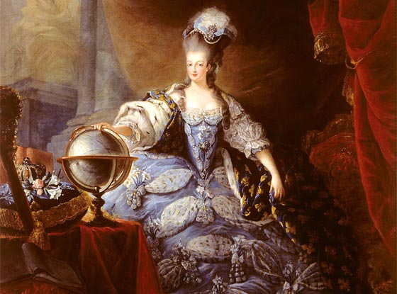
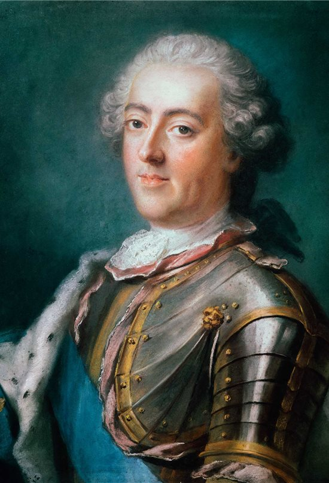

Biografia de Maria Antonieta

María Antonieta nació el 2 de noviembre de 1755 en Viena, Austria. Era hija del emperador Francisco I de Lorena y de la poderosa emperatriz María Teresa de Austria, una de las monarcas más influyentes de Europa. Fue la decimoquinta de dieciséis hermanos, y creció en una corte llena de lujo

A los 14 años, María Antonieta fue comprometida con Luis XVI, como parte de una alianza política entre Austria y Francia. Se casaron en 1770, y su llegada a Versalles fue celebrada con grandes fiestas. Sin embargo, también generó desconfianza entre algunos franceses,que veían a Austria como una potencia rival.

Cuando Luis XVI subió al trono en 1774, María Antonieta se convirtió en reina a los 18 años. Fue criticada por su estilo de vida lujoso en medio de la crisis económica de Francia y por su origen austríaco, lo que la hizo impopular. Tras un juicio con acusaciones falsas, fue ejecutada en 1793, convirtiéndose en un símbolo del fin del Antiguo Régimen.